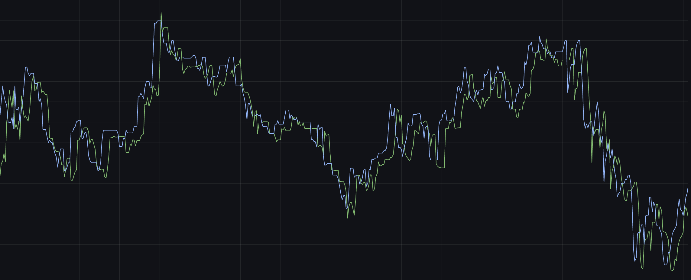

Where Generative AI creates, Analytical AI clarifies and optimizes. Using advanced neural networks, we can derive actionable intelligence from your data, optimize processes, find optimal compositions and more. From fintech to engineering, from healthcare to data processing, Analytical AI can help you make better decisions and optimize your processes, the application fields are endless.

🔮 Predictive Analytics & Maintenance
⚙️
End-of-Life & Predictive Maintenance
Anticipate when machinery, vehicles, or electronics are likely to fail by combining sensor data with predictive models. This reduces downtime and saves on unnecessary replacements.
📈
Market Predictive Analysis
Analyze market trends, consumer sentiment, and economic indicators to predict stock prices, demand fluctuations, and market opportunities. Use advanced time-series models to forecast market movements and optimize investment strategies.
🛒
Customer Behavior Forecasting
Build models that predict purchasing patterns, allowing you to deliver personalized recommendations and boost customer retention.
📧
Email Classification with NLP
Automatically categorize and prioritize incoming emails to reduce customer response time — used in logistics for faster ticket handling.
💰 Profit Enhancement & Cost Savings
🚨
Failure Detection
Deploy real-time anomaly detection models to monitor production lines, vehicles, or IT systems — preventing costly outages.
📦
Supply Chain Acceleration
Forecast demand, optimize inventory, and automate planning to cut operational costs and delivery times.
📊
Customer Behavior Prediction for Profit Enhancement
Predict customer lifetime value, churn probability, and purchase likelihood to optimize pricing strategies, personalize offers, and maximize revenue per customer. Use behavioral data to identify high-value segments and increase profit margins.
📈
ARIMA & Advanced Forecasting
Predict demand for groceries, meals, or consumer goods to optimize stock. Anticipate product trends, seasonal spikes, or global supply shocks with time-series models.
👁️ Computer Vision Applications
🎯
Image Segmentation & Object Identification
Detect and classify objects such as cars, people, faces, or even driver behaviors (e.g., one-hand driving in mining trucks for safety monitoring).
🆔
Identity Verification & Fraud Prevention
Extract text and validate data from ID cards with OCR + image analysis to detect mismatches and prevent identity fraud in finance or lending.
🔧
Edge Deployment with NVIDIA Jetson
Run computer vision models locally on small, efficient devices for real-time monitoring in logistics, retail, or manufacturing.
🚛
Operational Efficiency in Logistics
Use CV to monitor fleet and warehouse activity, then optimize operations to reduce congestion. Automate access control and improve traceability across transport hubs.
🎯 Specialized Business Applications
💳
Churn Prediction & Credit Scoring
Spot customers likely to churn and intervene with retention strategies. Apply ML-based credit scoring to improve approval rates while reducing default risk.
🧪
Optimal Composition of Materials
Apply Bayesian Optimization to find the best-performing composition of products, chemicals, or processes (e.g., alloys, batteries, pharmaceuticals).
🛡️
Content Moderation
Automatically scan images, videos, and ads to flag inappropriate or non-compliant content before publication.